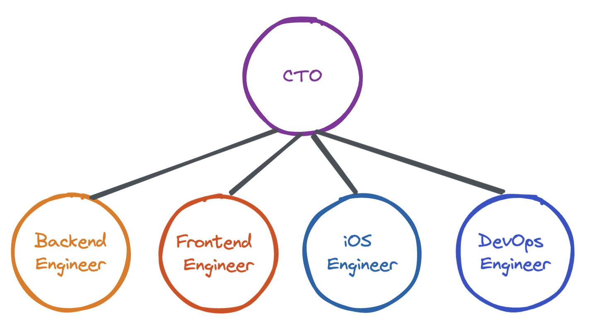
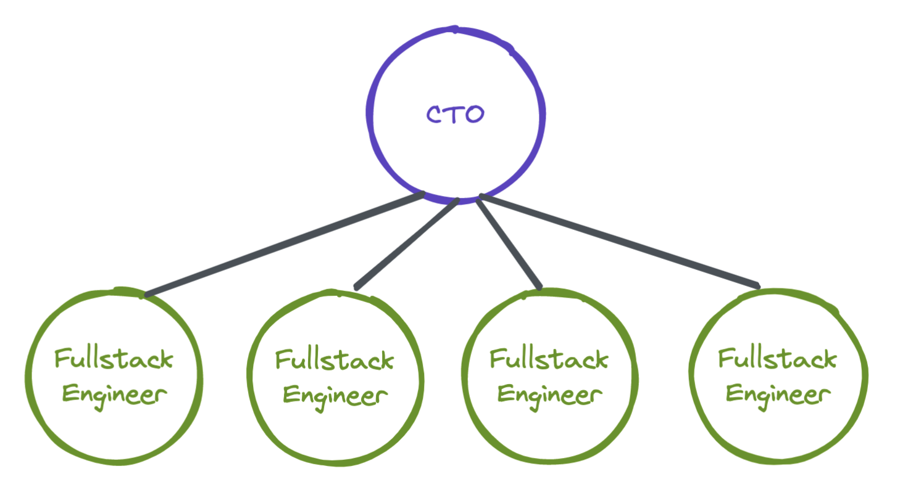
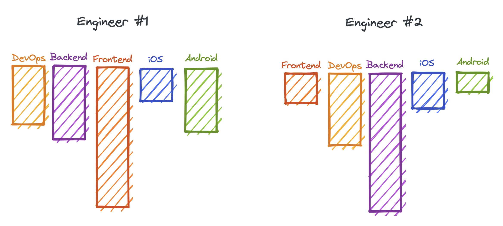

In support of hiring generalists for most early-stage startups
Jul 4, 2022 · 3 minute read · CommentsLeadership
The vast majority of early-stage startup products consist of an application made of a handful of UI screens, a few CRUD APIs, real-time updates, notifications and not much else. However, when it is time to build a small team, many hire specialist roles from day one. For example, in a team of 4 engineers, you often see specific frontend, backend, iOS and DevOps roles. If the company later wanted to build an Android app, they would also hire an Android engineer.
I think this is a mistake in 95% of cases.

Here are some of the consequences of a heavily specialised team early on in a startup’s life.
- 🛑 Development can halt whenever anyone goes on holiday or gets sick.
- 😱 There’s always severe disruption when someone leaves the company as they are typically the only person holding all the knowledge of a particular system area.
- 🛣️ The team is less able to adapt to changing priorities. For example, the iOS app is abandoned in favour of a web application with a larger scope. Startups are high uncertainty environments, and this is likely to happen.
- 🤔 It’s easy for engineers to fall into the trap of thinking in terms of UI screens and API endpoints instead of user experiences and real value.
Instead, I would encourage CTOs and founders to consider hiring fullstack engineers or generalists.

Generalists are not experts and thought leaders in every software development field. Such a person does not exist. At the very least, you’ll have a tough time finding and hiring them. I am talking about engineers with t-shaped skillsets. A fullstack engineer may know more about building amazing frontends and prefer to work in that area. At the same time, they will be versatile enough to be productive and create quality work for others.

Before going to hire, you should analyse the current gaps of the team so that you can bring a generalist aboard whose top skills fill some of those gaps. Then, you can promote activities like tech talks and pairing so that the knowledge of the new joiner spreads across the team.
Some of the benefits of hiring generalists early on are:
- 💪 Your team is more resilient to people being out, whether on holiday or permanently.
- 🧘♀️ Increased flexibility, you have folks who can work on the most important thing™.
- 🥅 It becomes easier to encourage product thinking and help engineers focus on finding PMF.
Of course, everything comes with a disclaimer, as there are few absolute truths when building products. I said that hiring specialists early on may be a bad idea 95% of the time. Well, what about the remaining 5%.
When hiring, you should always work back from business goals. In some cases, hiring specialists from the get-go may make sense. Here are a couple of examples.
- Your mobile experience cannot be replicated as a web or React Native app, and you need folks who can write iOS or Android native apps.
- Your product is a REST API with a complex AI system behind the scenes and no graphical UI. You may want AI engineers who can also write APIs.
- You run a web3 Ponzi scheme and need blockchain experts.
🙌 Thanks for reading.